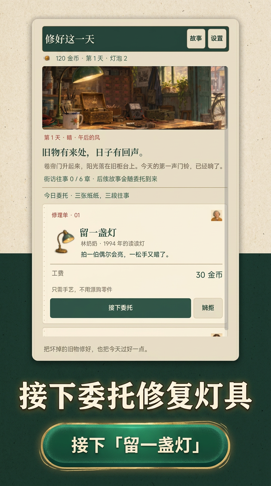

诊断与维修拆成明确阶段
检测、维修、组装、测试和交付各自承担清晰任务。不同故障需要不同操作，玩家先理解症状再处理，避免所有旧物都退化为同一种点击流程。
TAPTAP MAKER / 个人 AI 游戏实践
旧物修理 / 轻经营 / 叙事益智
在街角小铺检测台灯、音乐盒和风扇，清理、校正、组装再测试。短益智连接修理动作，街坊故事和店铺成长赋予旧物新的去处。

TapTap 公开测试 · 2026.10.25 核对
GAMEPLAY / 核心体验
接下委托后观察症状，完成检测、维修、组装和交付。公开介绍包含三类旧物、24种委托、六位街坊与18章故事，并加入漏点排查、记忆配对和照片拼图。没有倒计时，失误不扣材料，免费提示可用。
TAPTAP GALLERY / 游戏展示图
以下来自 2026.10.25 核对的 TapTap 公开游戏页展示图；保留原图，部分含商店宣传文案，不冒充本次重新运行游戏的实机录制。
点击任意截图可查看原图。 多张画面可左右滑动，也可聚焦图库后使用方向键浏览。


DESIGN / 规则与取舍
检测、维修、组装、测试和交付各自承担清晰任务。不同故障需要不同操作，玩家先理解症状再处理，避免所有旧物都退化为同一种点击流程。
扫雷式漏点排查、旧物记忆配对和九宫格照片拼图分别提供观察、记忆和空间整理体验，并与修理铺情境相连。
故事设有前章依赖和固定日程，让角色关系随维修逐步展开。交付报酬连接工具、工作台与展示柜升级，店铺共三个成长阶段。
无营业倒计时，失误不扣材料，提供免费提示。近期迭代纸面票券风格、按钮三态、大字和棋盘适配，照顾小屏阅读与操作。
MY PRACTICE / 项目推进
通过 AI 协作将诊断、维修、短益智、叙事和轻经营组织为完整循环，推进委托与故事内容结构。根据反馈持续调整怀旧纸面 UI、工具提示和小屏按钮，整理实际玩法与宣传资料的对应关系，体现系统规划和移动交互打磨。
TAPTAP / 游戏入口
试玩入口与当前可玩版本以 TapTap 游戏页为准；公开介绍中的功能和数量属于开发者在平台展示的信息。